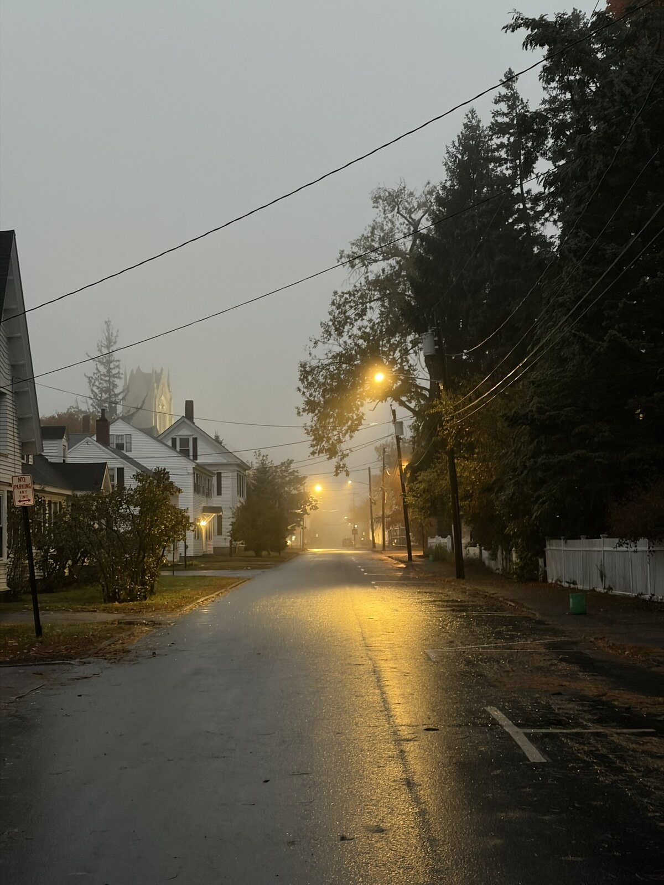

Short story
The Thoughts of Trees

It had rained all day, and the moment I stepped outside I could feel the damp seeping into my skin. Yellow light from the streetlamps carved beams through the air. The mist was out tonight. It wrapped over the sky in a dusky grey glow.
The houses were stark white, jutting out from the sidewalk like the split bones of the earth. As I was walking, I looked at the trees. I thought about the weight of time that must have passed to make them stoop and bend to graze the tops of the houses from their high perches.
I often wonder about the thoughts of trees. Do they feel? Do they understand? Videos of underwater fauna play in tempo across my mind, the rapid, violent movements of starfish and sea urchins in their time-lapsed motions. I watch the trees, and I see their snaking, grasping battle for resources. How must humans appear to them? We move so quickly, we might as well be invisible. Blurs and shadows, striking them with shining swirls of gleaming metal.
I walk further. The lamps illuminate the damp asphalt in a soft glow. My feet click across the damp. I am a lone soldier, a smaller silence amidst the quiet night, the hum of cars too distant to interject on the solemnity around me.
What a terrible idea, I think, that a tree could feel. The vision grasped me again, of humanity as an unknowable force, inconstant and terrible.
Then comes the second thought, which always follows the first, and is far worse. If we are invisible to trees, if our thoughts are so fast that they can’t be seen, who is thinking ahead of us? Might there be something, some being or creature out there whose thoughts are faster than ours? Our very own blurs of invisible forces that think?
I reach the end of the road, and as I am about to turn on my heel and head home, back towards civilization, I see him. The giant.
His form rises slowly from the mist. Where his legs meet the ground is a blur of incorporeality, but where they rise they are vast and vibrate in the lamplight. The bulk of his body is blended with it’s surroundings. His enormous head scrapes the sky… and is also somehow right there before my own, close enough that I might touch. He is out of place, like a painting by an artist who hasn’t yet grasped the tricks of perspective. His body shifts and phases in the fading light. And his eyes. Oh his eyes. They are two deep black pits of shimmering moonlight, filled with a distant intelligence. One of his eyes turns to me slowly, then the other asynchronously follows. I am rooted to the ground with a primal terror too deep to describe. My limbs fail me, my entire body seizing up at the impossibility before me. He looks at me for just a moment, and I somehow feel that he understands. That he has contemplated me as fully as I was contemplating the trees a moment before. And to my shock and horror, this vast, terrible Thing opens his mouth, and he speaks. His voice fills the air in a dark, low timbre,
“not yet, little boy.”
He smiles. It is a small, curious smile.
The mist swirls once, and he is gone.